Sci-Fi Modular Rooms - eWolf
Sci-Fi Modular Rooms, Lets you easyly create sci fi base rooms and corridors with a helpful selection and snapping system.
Overview
Download
That you can get from Unity3D asset storeAvailable at the Unity Asset Store
Create First Rooms
To start creating room, We just need to add the prefab Assets\eWolf\SciFi_Rooms_System\Scripts\Prefabs\Map_pf.prefabin to your scenes, and with it selected you will see.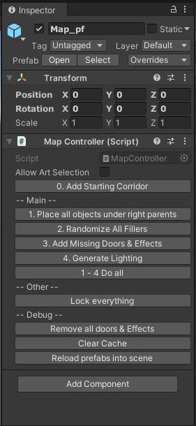You could just drop in any of the room or corridor prefabs on to this object,Or you can just click on the 0. Add Starting Corridor optionThis will add the basic starting corridor, And select it by default.From here you can add more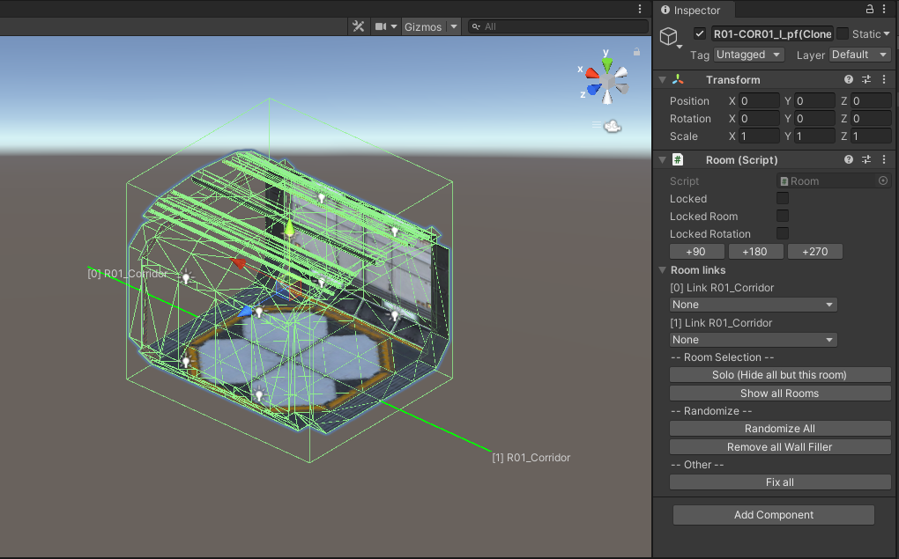When selected just click add to add it to the scene.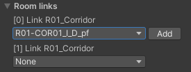It will add it and select it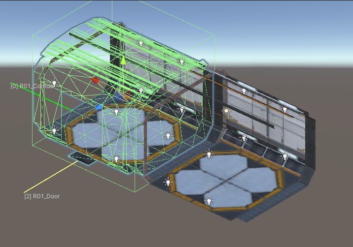NOTE: You may need to move or rotate the new room/corridor to make it snap in place
And select it by default.From here you can add more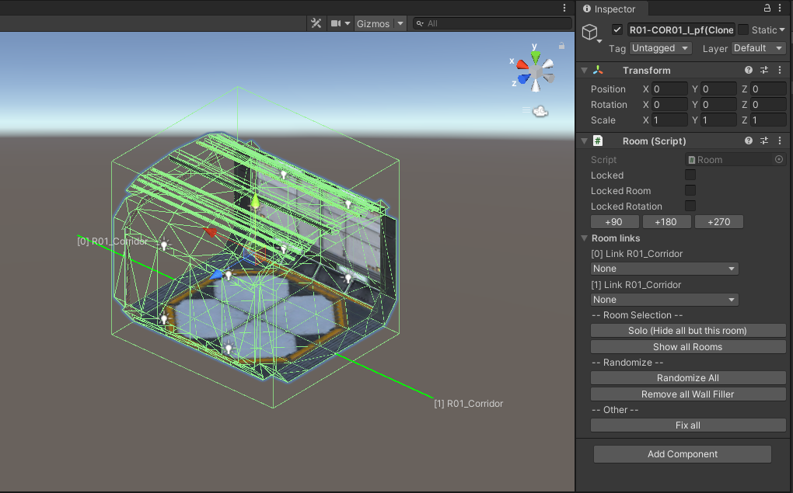When selected just click add to add it to the scene.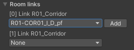It will add it and select it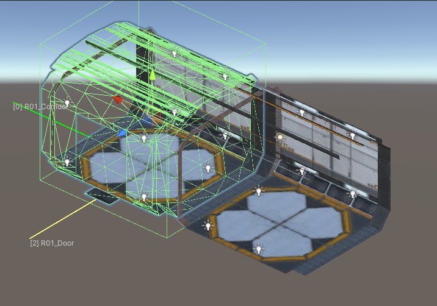NOTE: You may need to move or rotate the new room/corridor to make it snap in place
The new rooms - rooms links will show the new options, but also show where a room is all ready connected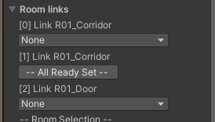This also show the different connection types - 'Door' and 'corridor'Now you can continue to add as many roos and corridors as you like.Once you have an area you wish to testre-select the Map_pf gameObject1. Place all objects under right parents Will place all the rooms in to level folders
This is to just make things easyer to find if you have a map with different levels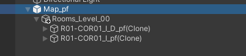2. Randomize All Fillers Will add extra random details to some rooms (see more later)
3. Add Missing Doors & Effects Will add the doors to the map
 It's created the door as a Fake door, this is due to the door leading now where.And will not open.4. Generate Lighting Will bake in the lighting for the rooms.
It's created the door as a Fake door, this is due to the door leading now where.And will not open.4. Generate Lighting Will bake in the lighting for the rooms.
NOTE: Scene need to be set to use light map/backing - see Setting up Lighting sectionAll lights in prefabs are set-up as Baked.
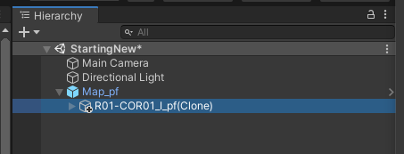
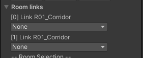
The room links drop down lists allow you to select what room/corridor you would like to addIt will only give you the options for that connection type.
The new rooms - rooms links will show the new options, but also show where a room is all ready connected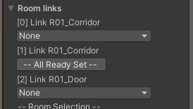This also show the different connection types - 'Door' and 'corridor'Now you can continue to add as many roos and corridors as you like.Once you have an area you wish to testre-select the Map_pf gameObject
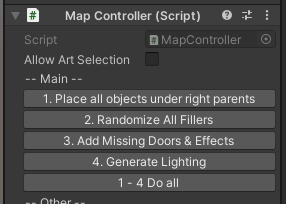
1. Place all objects under right parents This is to move all the object under the map_pf object, in to folders.
2. Randomize All Fillers Some rooms have extra random details
3. Add Missing Doors & Effects To add the Door at the points of the links
4. Generate Lighting Generate lighting for the rooms
1 - 4 Do all Handy do all the aboce in one step
2. Randomize All Fillers Some rooms have extra random details
3. Add Missing Doors & Effects To add the Door at the points of the links
4. Generate Lighting Generate lighting for the rooms
1 - 4 Do all Handy do all the aboce in one step
This is to just make things easyer to find if you have a map with different levels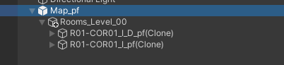2. Randomize All Fillers Will add extra random details to some rooms (see more later)
3. Add Missing Doors & Effects Will add the doors to the map
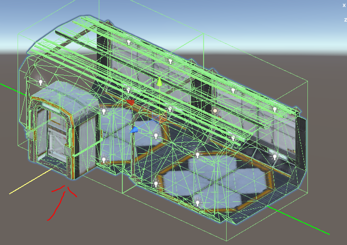
NOTE: Scene need to be set to use light map/backing - see Setting up Lighting sectionAll lights in prefabs are set-up as Baked.
Before Bake
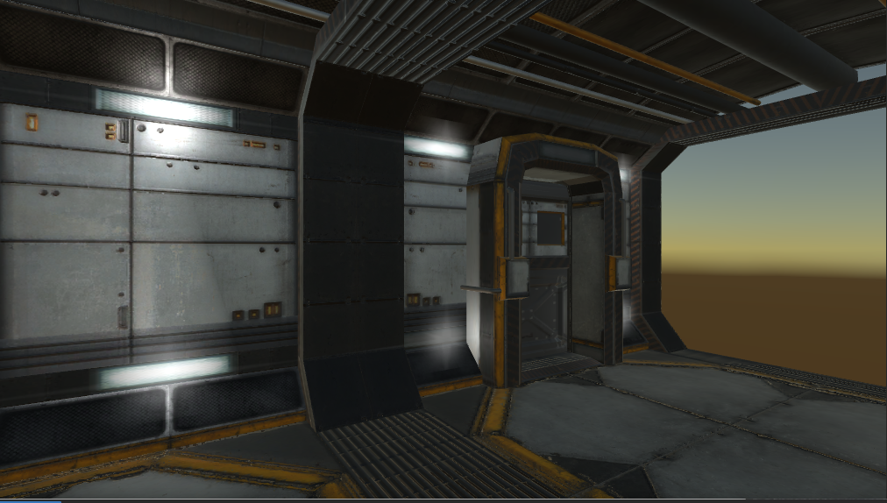
After Bake
Player setup
To make the doors open you just need two thingsYour player object needs to have the script RoomInteractor And the script MainGameFlow anywhere in the projectWe have prefabs for both. MainGameFlow_pf This can live anywhere in the scene
TempPlayer_pf This needs to be under map_pf object.(This is just a camera, no player control)
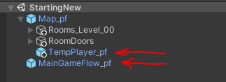Once both are added, You can run the game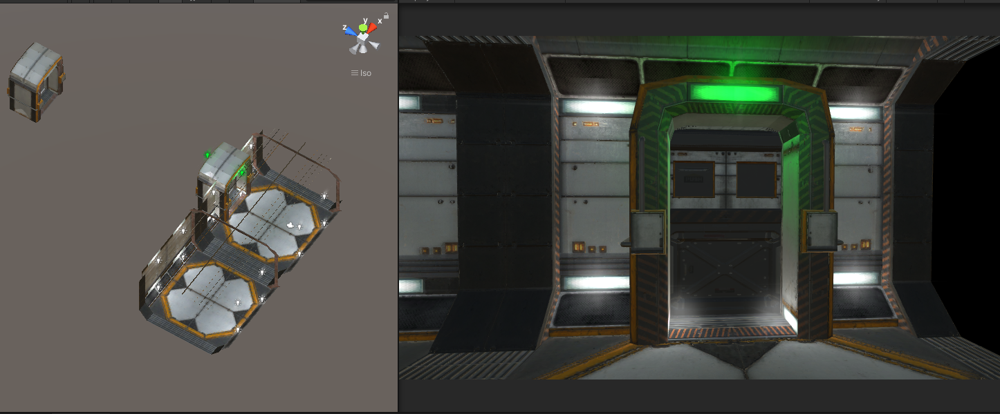When you move the player object towards the door it will open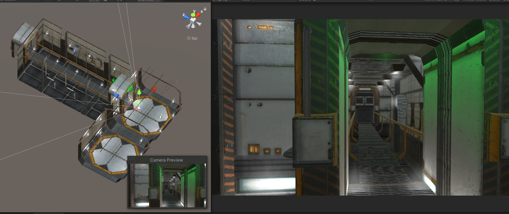And the room behind the door will unhide, but for the door opensIf you move more in to the room, the door will close and hide the rooms behind it.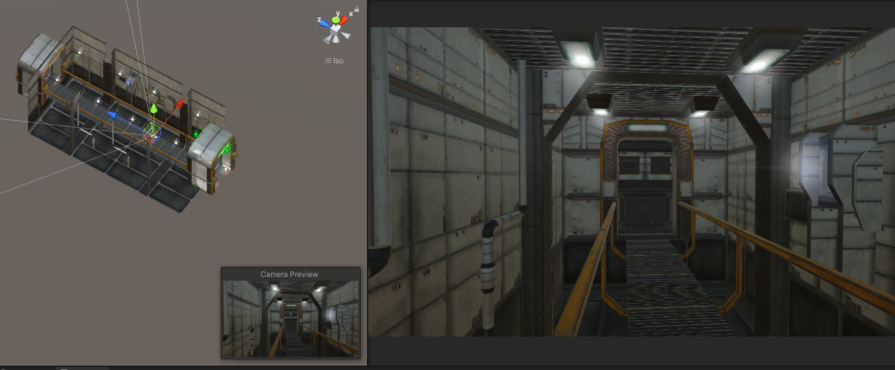
TempPlayer_pf This needs to be under map_pf object.(This is just a camera, no player control)
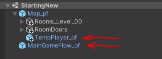Once both are added, You can run the game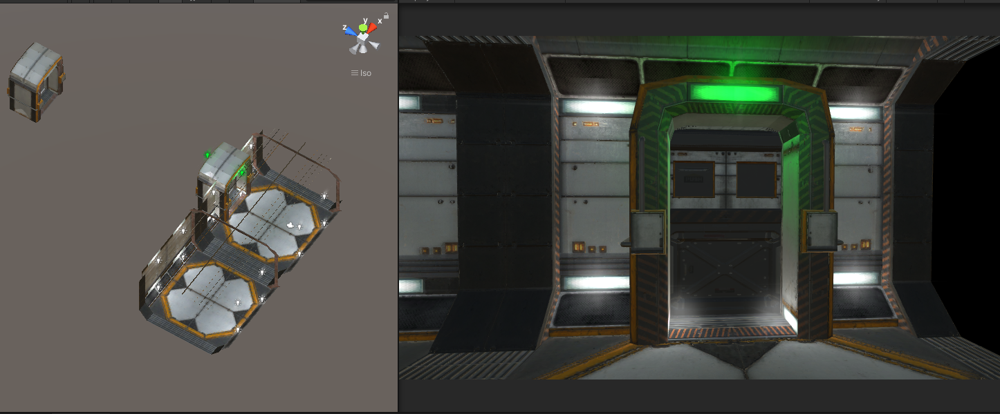When you move the player object towards the door it will open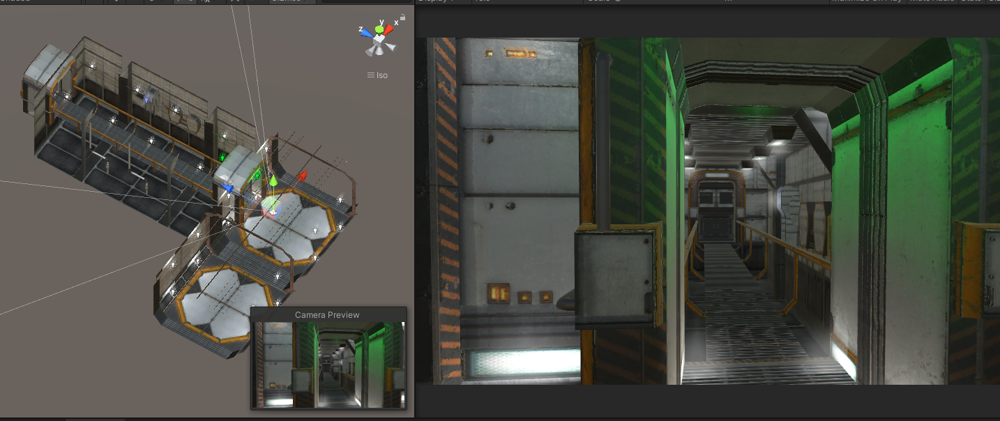And the room behind the door will unhide, but for the door opensIf you move more in to the room, the door will close and hide the rooms behind it.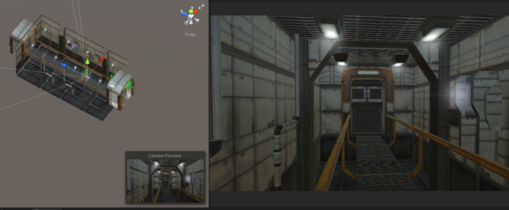